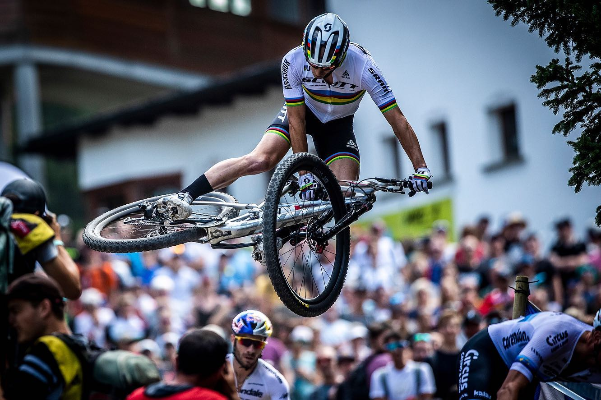

Passions



I have skills in HTML, CSS, SASS, responsive design and JavaScript. Passionate about technology and continuous learning, with a focus on creating attractive and functional web interfaces. I look forward to contributing to challenging projects while developing my career in the IT world.
Download CVThroughout my professional career, I have demonstrated a strong ability to lead teams and optimize processes, experience that I now complement with web development skills acquired through personal projects and training. My transition to the IT world stems from a genuine passion for technology and creative problem solving. During my time as a production leader, I learned to communicate effectively, manage multidisciplinary teams, and maintain a constant focus on continuous improvement, qualities that I consider essential in any development environment. In recent months, I have worked on my skills as a front-end developer, demonstrating competencies in HTML, CSS, JavaScript, and responsive design. In addition, my hunger for growth and self-learning drives me to constantly seek out new challenges and opportunities to improve my technical skills. I am excited about the possibility of bringing my experience and energy to your team, contributing to the success of your projects while consolidating my career in the world of web development. I thank you in advance for your time and remain at your disposal to discuss further how I can contribute to your team.